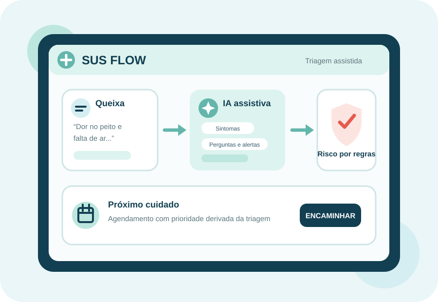
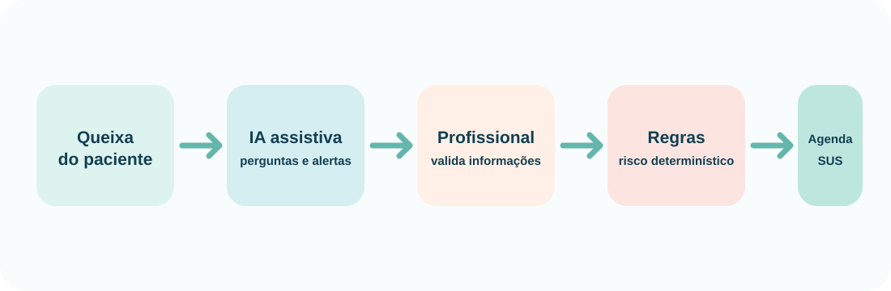

Um copiloto de acolhimento que organiza informações clínicas, apoia profissionais e prioriza atendimentos — sem substituir o julgamento humano.
IA localRisco determinísticoAgenda priorizada
01 / 08No acolhimento, profissionais precisam coletar informações críticas, organizar sinais vitais e direcionar cada pessoa com agilidade.
Queixas em linguagem livre podem ocultar sintomas importantes.
O atendimento exige velocidade, padronização e atenção clínica.
Depois da triagem, o próximo cuidado precisa ser encaminhado.
O SUS Flow conecta paciente, profissional, triagem e agendamento em uma API segura e demonstrável.

O Ollama transforma a queixa livre em apoio prático para o profissional. A classificação de risco continua transparente, determinística e auditável.
Sugere sintomas, perguntas complementares, alertas e campos ausentes.
A equipe de saúde revisa as informações antes de registrar a triagem.
Sinais vitais e sintomas determinam o nível de risco; não o modelo de IA.
A IA é local via Ollama e falhas degradam para uma resposta vazia; o fluxo de triagem permanece disponível.
05 / 08Back-end Java 21 e Spring Boot, estruturado com Ports & Adapters.
Spring BootPostgreSQL + FlywayJWTOllamaDockerOpenAPIControllers são adaptadores de entrada; portas isolam PostgreSQL e Ollama; as regras de risco permanecem no domínio.
Resultado: domínio independente, integrações substituíveis e IA sem poder de decisão.
Em um piloto, essas seriam as métricas para validar o valor da solução junto às unidades de saúde.
07 / 08Evoluir com prontuário integrado, auditoria de sugestões de IA, autorização por unidade de saúde e métricas operacionais.
Piloto em UBS/UPAObservabilidadeHistórico clínicoObrigado. Vamos demonstrar o SUS Flow.
08 / 08